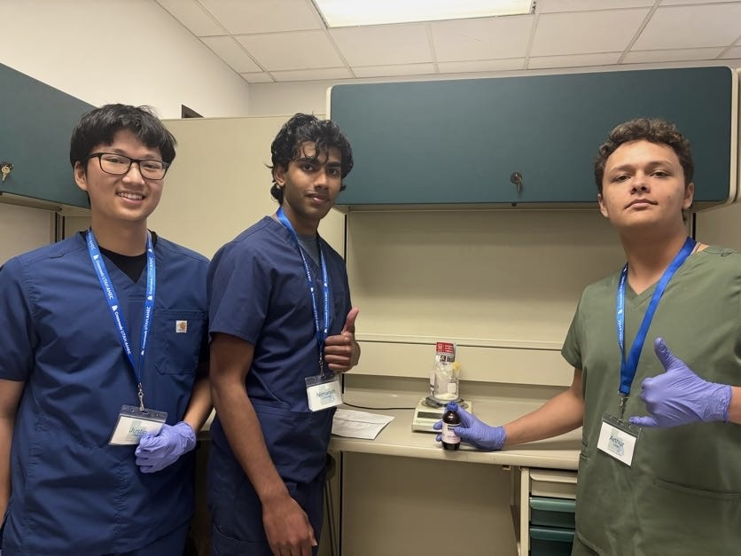

Crossroads Utah AHEC Internship
The Crossroads Utah AHEC internship is a program that introduces high school students to healthcare careers by visiting hospitals, job shadowing, and hands-on skill labs. I observed different medical departments and participated in educational activities with healthcare professionals to explore career paths in medicine and public health.

Para 2

Para 3

Para 4